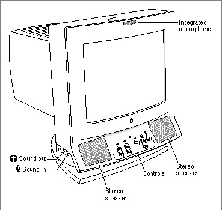
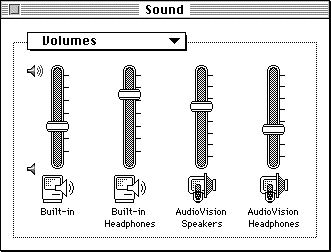

Important: Inside Macintosh: Sound is deprecated as of Mac OS X v10.5. For new audio development in Mac OS X, use Core Audio. See the Audio page in the ADC Reference Library.
About Audio Components
An audio component is a component that works with the Sound Manager to adjust volumes or other settings of a sound output device. The Sound Manager uses audio components, however, only when a particular sound output device has more than one audio port that can be controlled through software. If a sound output device has only one audio port, the sound component that communicates with the output device controls the volume settings of that port.
An audio port is any independently controllable sound-producing hardware connected or attached to a sound output device. For example, the Apple AudioVision 14 Display (shown in Figure 6-1) contains two audio ports: a set of speakers and a jack for headphones.
- IMPORTANT
- Because audio components are currently used to manage only volume and mute settings, they might have been called volume components. The more general term anticipates future capabilities of audio components. For example, audio components might in the future be used to modify bass or treble settings of an audio port.

Figure 6-1 The Apple AudioVision 14 Display

As the Volumes subpanel of the Sound control panel shows (Figure 6-2), the two audio ports are independently controllable by software.
Figure 6-2 The Volumes control panel for the Apple AudioVision 14 Display

The control panel shown in Figure 6-2 contains volume sliders both for the set of speakers and for the headphones. The volume of the speakers is controlled by the sound component that drives the sound output device. The volume of the headphones is controlled by an audio component.
In short, audio components are used to allow a single sound output device to have more than one audio port. The sound component that communicates with that device can control the volume setting of one audio port; audio components control the volume settings of all other audio ports.